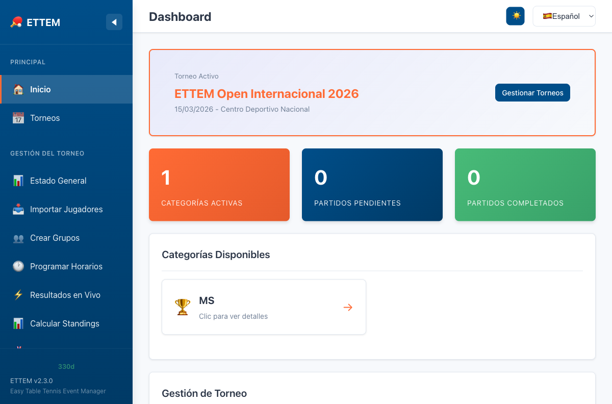

Panel Principal
Visión general del dashboard: torneos, categorías y acciones rápidas.
Vista General
Al abrir ETTEM en tu navegador verás el Panel Principal. Desde aquí puedes gestionar todos tus torneos, acceder a las categorías activas y navegar a cualquier sección de la aplicación.

Torneo Activo
En la parte superior del panel verás el torneo activo con su nombre, fecha y ubicación. Solo puede haber un torneo activo a la vez. Para cambiar el torneo activo, haz clic en el botón Cambiar Torneo o selecciona otro desde la lista de torneos.
Crear un Torneo Nuevo
- Haz clic en Nuevo Torneo en la esquina superior derecha.
- Completa el nombre, fecha y ubicación del torneo.
- Haz clic en Crear. El nuevo torneo quedará seleccionado como activo.
Tarjetas de Categoría
Cada categoría del torneo activo aparece como una tarjeta en el dashboard. Las tarjetas muestran de un vistazo:
- Nombre de la categoría (ej: U15BS, MS)
- Número de jugadores inscritos
- Fase actual: Sin iniciar, Grupos, Bracket
- Formato de partido: Bo3, Bo5 o Bo7
- Acciones rápidas: Ver jugadores, Ver grupos, Ver bracket
Indicadores de Estado
| Estado | Significado |
|---|---|
| Sin iniciar | La categoría tiene jugadores pero aún no se crearon grupos |
| Grupos en progreso | La fase de grupos está activa con partidos pendientes o completados |
| Bracket activo | La fase de eliminación directa está en curso |
| Finalizado | Todos los partidos del bracket han concluido y hay un campeón |
Crear una Categoría
Para agregar una nueva categoría al torneo activo, haz clic en Agregar Categoría dentro del panel y completa el formulario:
- Selecciona el código de categoría según la nomenclatura ITTF (ver tabla abajo).
- Elige el formato de partido: Bo3 (al mejor de 3), Bo5 (al mejor de 5) o Bo7 (al mejor de 7).
- Define el tamaño máximo de grupo: 3, 4 o 5 jugadores.
- Haz clic en Crear Categoría.
Nomenclatura de Categorías (ITTF)
ETTEM utiliza la nomenclatura oficial de la ITTF para nombrar las categorías:
| Código | Descripción |
|---|---|
U11BS | Under 11 Boys Singles (Varones Sub-11) |
U11GS | Under 11 Girls Singles (Damas Sub-11) |
U13BS | Under 13 Boys Singles (Varones Sub-13) |
U13GS | Under 13 Girls Singles (Damas Sub-13) |
U15BS | Under 15 Boys Singles (Varones Sub-15) |
U15GS | Under 15 Girls Singles (Damas Sub-15) |
U17BS | Under 17 Boys Singles (Varones Sub-17) |
U17GS | Under 17 Girls Singles (Damas Sub-17) |
U19BS | Under 19 Boys Singles (Varones Sub-19) |
U19GS | Under 19 Girls Singles (Damas Sub-19) |
U21BS | Under 21 Boys Singles (Varones Sub-21) |
U21GS | Under 21 Girls Singles (Damas Sub-21) |
MS | Men's Singles (Varones Abierto) |
WS | Women's Singles (Damas Abierto) |
Navegación Lateral
La barra lateral izquierda está siempre visible en pantallas grandes y se puede abrir con el botón ☰ en móvil. Desde ella accedes a:
- Torneo — Jugadores, grupos, resultados, standings, bracket y equipos
- Operación — Scheduler, marcador de árbitro, pantalla pública, impresión
- Personalización — Branding, exportar datos, certificados
- Ayuda — Preguntas frecuentes